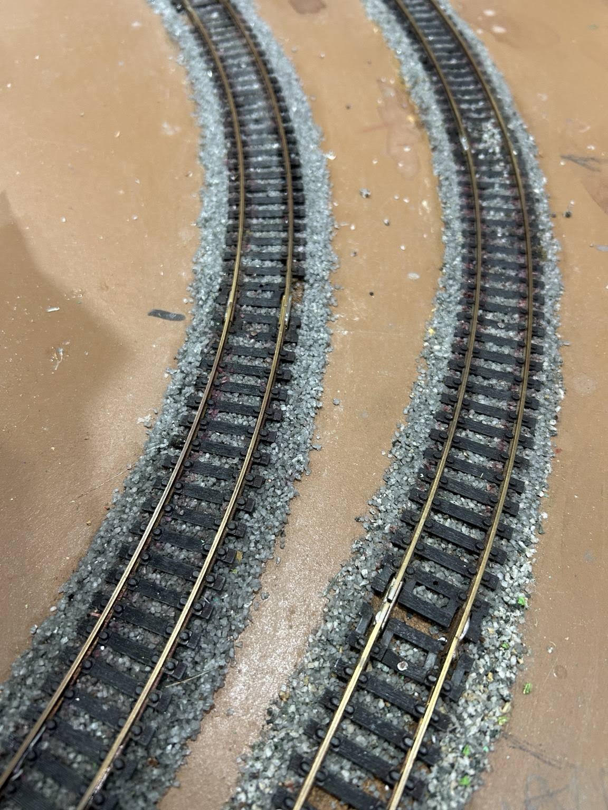
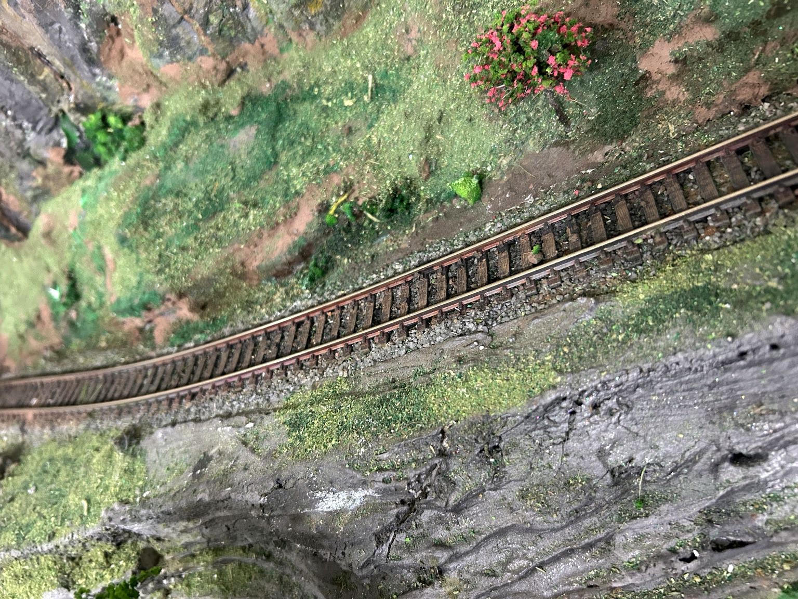

Assentamento de trilhos
O assentamento dos trilhos é uma das etapas mais importantes da construção da ferrovia. Busca-se obter um alinhamento seguro e, ao mesmo tempo, uma aparência realista, utilizando cortiça como base e brita fina para formar o lastro.
Como foi feito
- Os trilhos foram posicionados no traçado e parcialmente pregados, apenas para manter o alinhamento.
- Os trilhos foram levantados sem retirar os pregos, e a mesa foi pintada de cinza até 0,5 cm após o final dos dormentes.
- A cortiça de 3 mm foi cortada e também pintada de cinza.
- Nas curvas, foram preparados moldes de cartolina acompanhando o traçado dos trilhos. Com esses moldes, a cortiça foi marcada e cortada.
- Foi aplicada cola de contato ou Tekbond sob a cortiça, que em seguida foi posicionada abaixo dos trilhos.
- Os trilhos foram novamente abaixados, e foram colocados pesos sobre eles para auxiliar na fixação da cortiça.
- As pedras foram distribuídas entre os dormentes e nas laterais dos trilhos, utilizando-se um pincel para espalhar o material.
- Foram dadas leves batidas nos trilhos para acomodar o lastro, retirando-se o excesso sobre os dormentes e na parte interna dos trilhos.
- Nos desvios, foi necessário um cuidado especial para evitar que pedras ou cola prejudicassem o funcionamento das partes móveis.
- O lastro foi umedecido com uma mistura de álcool 70% e algumas gotas de detergente.
- Após aproximadamente 20 minutos, foi aplicada, com uma pipeta, uma mistura de 25% de cola branca e 75% de água.
- O conjunto permaneceu em secagem por um dia. Em seguida, o excesso foi aspirado e foram acrescentadas pequenas pedras nos pontos em que isso se mostrou necessário.

Trilhos assentados e alinhados após a aplicação do lastro. A brita fina é distribuída entre os dormentes e nas laterais da via, formando a base que reproduz, em escala HO, o aspecto do lastro utilizado nas ferrovias reais.

Trecho concluído após o assentamento dos trilhos, aplicação do lastro e execução do paisagismo. A vegetação, as pedras e os demais elementos cênicos ajudam a integrar a via ao terreno e dão maior realismo à ferrovia.